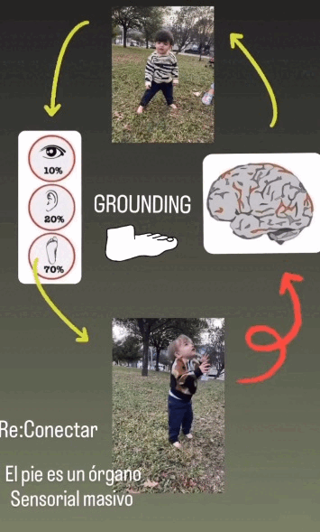
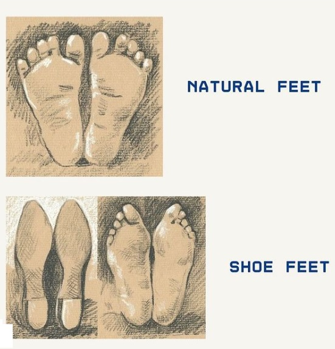
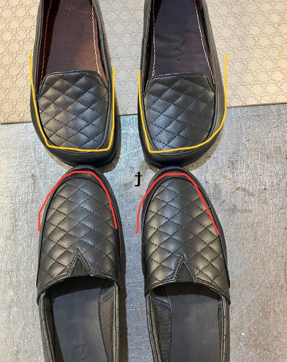

Calzado minimalista / Barefoot. Respeta la forma, movimiento y desarrollo natural del pié.
 ¿El dolor de pies está arruinando tus días?
¿El dolor de pies está arruinando tus días?
A menudo no nos damos cuenta de cuánto puede afectar nuestro bienestar en nuestra elección de zapatos. Los zapatos minimalistas pueden ser la clave para caminar sin dolor, una solución natural y eficaz.
Recuerda: cada pie es único, y nuestro pie no siempre encajará en el calzado tradicional. Si experimentas dolores persistentes o tienes preocupaciones por tu salud podológica, siempre consulta a un profesional especializado.
El GROUNDING tiene muchos beneficios para nuestra salud. Los pies son un órgano sensorial masivo, solo necesitamos entrar en contacto con la energía de la tierra a través de nuestros pies.
Para nuestros pequeños, la importancia de caminar descalzos en estas primeras etapas de la vida les ayuda a poder descubrir el mundo a través del sentir de sus pies, tiene que conocer su entorno para adaptarse mejor a él y poder desarrollar estrategias que le permitan prosperar en un medio cambiante.
Para nosotros los adultos también mejora nuestro estado de salud, por ejemplo cuando te sientas estresado quítate los zapatos y conecta con la tierra, haz una descarga de tu energía y cárgate nuevamente de energía positiva +.
Los pies naturales son más anchos en los dedos de los pies, fuertes, estables y sin dolor.
Los pies de zapato son puntiagudos, causa principal de los juanetes, pies rígidos, débiles, inestables y generalmente dolorosos.
Usar zapatos minimalistas es = a restaurar y mantener unos pies anatómicamente en armonía.
Usar zapatos antinaturales es = a desarrollar pies de zapatos.
La salud de los pies comienza por calzado que eliges.
Calzado que no altera la postura anatómica del cuerpo, sin elevación de arco ni suela en talón.
Mejor conocido como calzado Barefoot.

Somos una nueva marca de calzado minimalista / Barefoot llamada Pielogo®, compositivo que significa "conocedor" o "especialista" en PIE
ㅤ
El calzado Barefoot, tambien conocido como calzado minimalista, permite que tus pies se muevan de forma natural. Simula como estar caminando descalzo y al mismo tiempo fortaleciendo tus pies, rehabilitandolos mientras caminas y los protege de la suciedad.
El calzado convencional puede ser puntiagudo con una suela gruesa, rigida y con talón elevado. El uso diario de este tipo de calzado, puede generar problemas de salud.
Al fortalecer nuestros pies mediante el entrenamiento y el uso del calzado barefoot (o tambien andando descalzos), puede mejorar nuestra postura y ayudar a prevenir dolores y lesiones.
Descálzate mas a menudo y practica grounding, llenate de la energía positiva que nos aporta la madre naturaleza.
!El calzado minimalista es tu mejor opción!
Artesanalmente de principio a fin, fabricamos a mano cada uno de nuestros zapatos.
¡Gracias por confiar en el talento mexicano!

® 2024 -